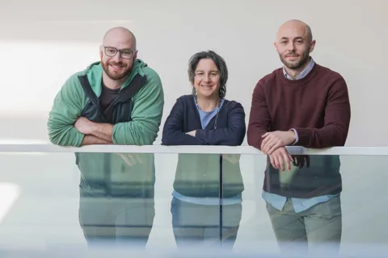
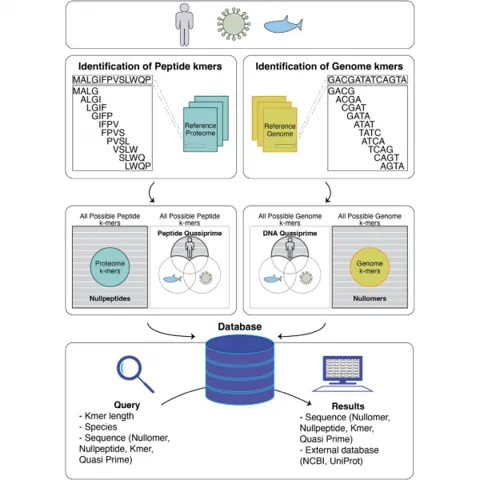

Selected Software and Tools GitHub
- muttSequencing counts paired with measured total load, 65+ studies
- PRISMConfidence intervals for absolute covariance from sequence counts
- SRCoVBenchmarking for genomic network inference
- biowzrdToolkit for analyzing public sequencing data
News
- Improving the rigor of AI tools for genomicsPenn State Science Journal · 2026

- New comprehensive omics database (kmerDB)Huck Institutes

- Hip fracture outcomes during COVID-19Hospital for Special Surgery · 2020